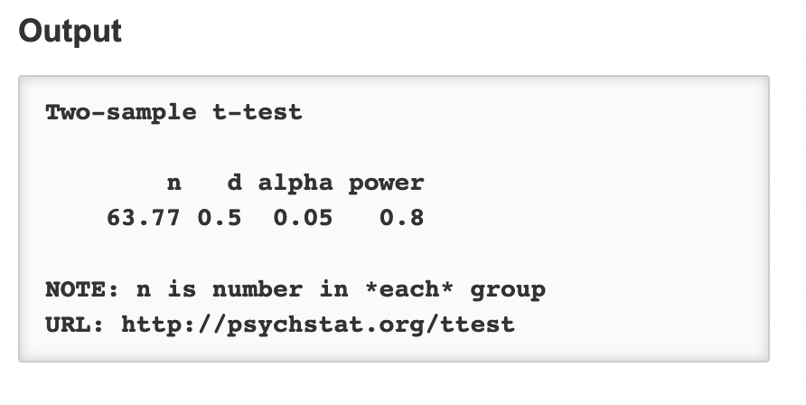
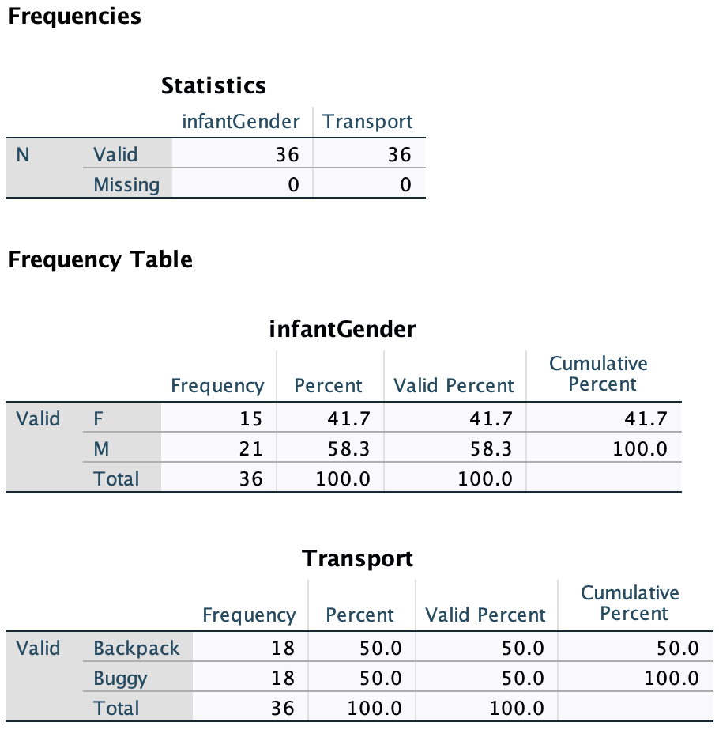
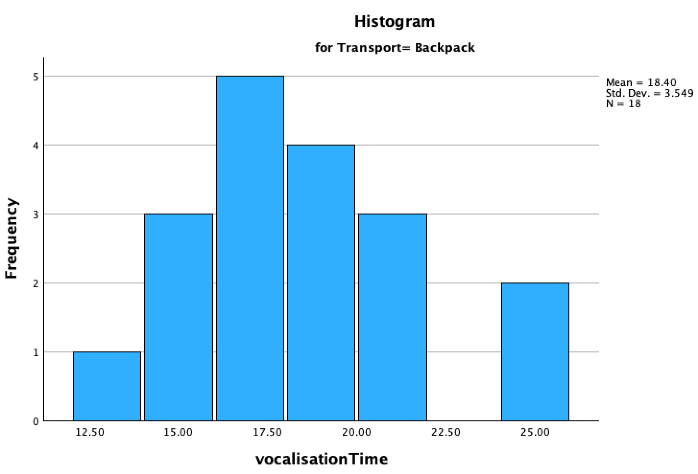
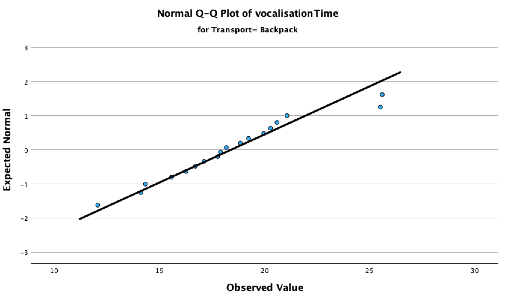
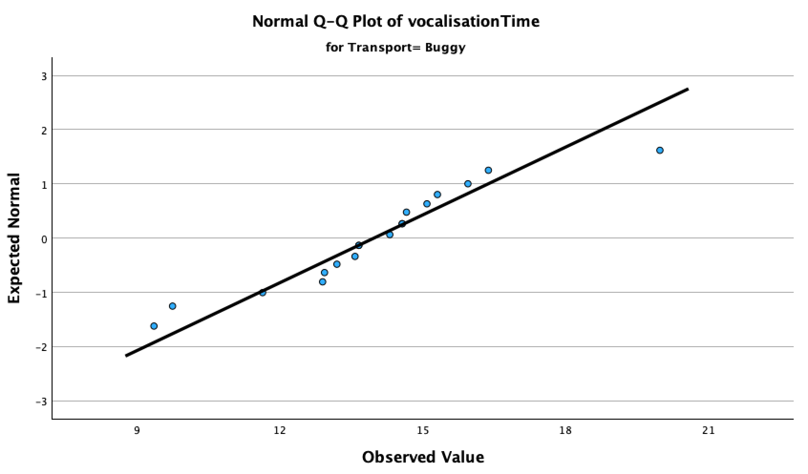
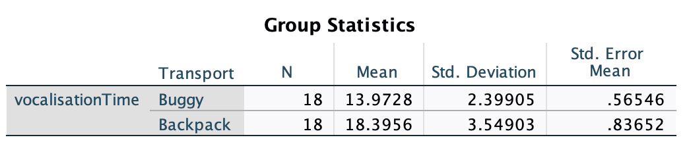

Intro to Today’s Lab
During today’s lab, you’ll apply the concepts discussed during this week’s lecture. Each lab consists of a range of tasks, with corresponding questions you can answer. Please note that the questions are not required and not marked, although they do provide a helpful source of formative feedback that will help you gauge your understanding.
In this week’s lab, you’ll be working with data simulated based on this paper. In this study, researchers tested the effect of infant transport modality on their social interaction. Specifically, they compared the use of buggies and backpacks.
You’ll be analysing data from two separate studies. In the first, researchers recruited 36 participants and split them into a backpack group and a buggy group. They then sent participants on a 15-minute walk with their infant and recorded the total number of parent and infant vocalisations. They also recorded the number of times the parent touched their infant over the course of the walk.
You can download the dataset from the first experiment here. This dataset contains the following variables:
| Variable Name | Description |
|---|---|
| infantGender | Levels: M = Male, F = Female |
| infantAge | Infant age in weeks |
| parentGender | Levels: M = Male, F = Female |
| parentAge | Parent age in years |
| Transport | Transport Modality; Levels: Buggy; Backpack |
| infantVocalisations | Total number of infant vocalisations |
| parentVocalisations | Total number of infant vocalisations |
| Touch | Total number of times parent touched infant |
After running the first study, the researchers wanted to further support their findings. They ran a second experiment using a within-subjects design. In this experiment, they recruited 40 participants and sent them out on 2 separate walks over the course of two weeks, once using a backpack and once a buggy. In this experiment, they recorded both infant and parent vocalisations from the same participants across each condition.
You can download the dataset from the second experiment here. It contains the following variables:
| Variable Name | Description |
|---|---|
| infantAge | Infant age in weeks |
| parentAge | Parent age in years |
| infantGender | Levels: M = Male, F = Female |
| parentGender | Levels: M = Male, F = Female |
| buggyIVocal | Total number of infant vocalisations while in buggy |
| backpackIVocal | Total number of infant vocalisations while in backpack |
| buggyPVocal | Total number of parent vocalisations while using buggy |
| backpackPVocal | Total number of parent vocalisations while using backpack |
Learning Objectives
At the end of this lab, you will be able to:
- Identify hypotheses which may be tested using \(t\)-tests
- Run an appropriate power analysis for both independent and paired-samples \(t\)-tests
- Check assumptions for both independent- and paired-samples \(t\)-tests
- Use SPSS to perform both independent- and paired-samples \(t\)-tests
- Interpret and report results from both independent- and paired-samples \(t\)-tests
State your Hypotheses
The first step when planning your analysis is to specify your research questions and associated hypotheses. You should make a separate hypothesis for every analysis.
Your Task
For each analysis:
State your research question
Identify the independent and dependent variables
State both the null and alternative hypothesis
Specify your hypothesis using statistical notation, as directed in the lecture
Click here for a hint
In the first study, you will be conducting 4 different analyses. In the second, you will be conducting two different analyses. You should specify your hypotheses/variables for each.
Click here for the solution
Study 1
Research Question: Does infant transport modality affect the infant’s socialisation opportunities? Specifically, we are investigating whether the transportation modality affects the following during its use: (1) infant vocalisation to the parent; (2) parent vocalisation to the infant; (3) physical contact between the parent and infant.
Variables
IV: Transportation Modality; DV: Infant Vocalisation
IV: Transportation Modality; DV: Parent Vocalisation
IV: Transportation Modality; DV: Physical Contact
Hypotheses:
\(H_0: Infant\ Vocalisation_{buggy} = Infant\ Vocalisation_{backpack}\) \(H_1: Infant\ Vocalisation_{buggy} \neq Infant\ Vocalisation_{backpack}\)
\(H_0: Parent\ Vocalisation_{buggy} = Parent\ Vocalisation_{backpack}\) \(H_1: Parent\ Vocalisation_{buggy} \neq Parent\ Vocalisation_{backpack}\)
\(H_0: Contact_{buggy} = Contact_{backpack}\) \(H_1: Contact_{buggy} \neq Contact_{backpack}\)
Study 2
Research Question: Does infant transport modality affect the infant’s socialisation opportunities? Specifically, we are investigating whether the transportation modality affects the following during its use: (1) infant vocalisation to the parent; (2) parent vocalisation to the infant.
Variables
IV: Transportation Modality; DV: Infant Vocalisation
IV: Transportation Modality; DV: Parent Vocalisation
Hypotheses:
\(H_0: Infant\ Vocalisation_{buggy}-Infant\ Vocalisation_{backpack} = 0\) \(H_1: Infant\ Vocalisation_{buggy}-Infant\ Vocalisation_{backpack} \neq 0\)
\(H_0: Parent\ Vocalisation_{buggy}-Parent\ Vocalisation_{backpack} = 0\) \(H_1: Parent\ Vocalisation_{buggy}-Parent\ Vocalisation_{backpack} \neq 0\)
Note that in both studies you could also use directional hypotheses, although it is not recommended. To specify direction, you would use \(>\) or \(<\) rather than \(\neq\).
Run the Appropriate Power Analyses
After deciding on your hypotheses but before gathering data, you should run a power analysis to determine the sample necessary to capture your effect of interest. When running power analyses, you only need to run a single power analysis for each study design. In this case, you have 2 designs, so you will only need to run 2 analyses.
Recall the effect size measure for \(t\)-tests, \(d\):
| Strength | Absolute Magnitude of \(d\) |
|---|---|
| Weak | \(\leq\) .20 |
| Moderate | \(\approx\) .50 |
| Strong | \(\geq\) .8 |
Your Task
For your first study, run a power analysis using \(\alpha\) = .05 and power = .8 to determine the sample size necessary to detect a moderate effect size (d = .5). Assume you will have an equal number of participants in each group.
For the second study, let’s imagine that you already had data from 40 participants recruited as part of a larger study. You want to determine the effect size this sample has the power to detect, given an \(\alpha\) = .05 and a power = .8. Run the appropriate power analysis.
Click here to use WebPower to run your analysis.
Click here for a hint
Two important hints:
- The power analysis uses/outputs the number of participants in each group, rather than the total number of participants.
- Remember, the study design of your second study is slightly different from the first. This will affect the input to your power analysis.
Click here for the solution
Navigate to the WebPower site. For \(t\)-tests, you’ll be using one of these options, depending on whether your sample within each group will be equal or not.

Study 1
Because you’re assuming an equal sample size within each group, you will click the first option: “Power of t-test.” You’ll leave the Sample Size option blank, as that’s the value you want to calculate. You’ll fill in the other options as follows:

Because you’ll be running an independent-samples \(t\)-test, the ‘Type of Test’ option will be ‘Two sample.’ Note that if you choose to use a directional hypothesis, you’ll need to change the ‘H1’ value to ‘Greater.’ WebPower doesn’t seem to work with ‘Lesser’ for some reason, but you can use ‘Greater’ regardless of the direction, as the results would be identical either way. Once you’ve entered the appropriate information, click ‘Calculate’ and the results will appear below.

Note that the sample size refers to the sample PER GROUP, not the total sample. In other words, to achieve 80% power to detect a moderate effect size with an alpha = .05, you would need 64 participants per group, or 128 total participants.
Study 2
In the case of your paired-samples analysis, you will once again have an equal sample size within each group. In this case, you want to calculate effect size, so you will leave that box blank and fill in the other values. You’ll need to update ‘Type of Test’ to ‘Paired.’ If you entered everything properly, you’ll get the following output:

With 40 participants and a within subjects design, you’ll have 80% power to detect an effect of \(d\) = .45, given \(\alpha\) = .05.
Study 1: Calculate Descriptive Data
Before running any analyses, you should first check your data. In many cases, some kind of cleaning or data wrangling will be necessary. For instance, are there any missing values? Do you have any unexpected values or extreme outliers? Do you need to create a variable from the existing data (e.g., a summary metric for a cognitive task). These things should be dealt with before conducting the analyses.
Additionally, you’ll need to compute descriptive data. You’ll do this for both your main variables of interest and your sample’s demographic data (this must be included in the Sample portion of your Methods section).
Your Task
- Check Study 1 data.
- Are variables coded correctly in SPSS?
- Produce frequency tables for categorical variables
- Compute the mean, standard deviation, minimum, and maximum on continuous data
- Are there any missing values or outliers?
Click here for a hint
There are some issues to address under the Variable View tab. Remember to use the Frequencies option rather than Descriptives.
Click here for the solution
When you check your data under Variable View, you’ll notice that your dependent variables have been coded as ‘Nominal’. You’ll need to change this to ‘Scale’ in order for the \(t\)-test to work properly.
Next, produce frequency tables and descriptive statistics by navigating to Analyze > Descriptive Statistics > Frequencies. Add your 3 categorical variables to the Variable(s) box and make sure ‘Display Frequency Tables’ is checked, then click ‘OK’. If you’ve done this properly, you should get the following output:

Here, you can see the frequencies of participants in each category. You might note that there were slightly more male infants than females, but there were substantially more female parents than males. You can see that there are equal participants in the ‘Buggy’ and ‘Backpack’ groups, as expected.
After checking the categorical variables, you can check the continuous data. Open the Frequencies box once again and replace your categorical variables with your 5 continuous variables. Uncheck ‘Display Frequency Tables’ and click the ‘Statistics’ box. Select ‘Mean’, ‘Std. deviation’, ‘Maximum’ and ‘Minimum’, then click ‘Continue’. Click ‘OK’. You should get the following table:
Have a look at the values here. There is no missing data, and the values seem reasonable, so you can move forward to the next step.
Study 1: Check Assumptions
The assumptions of an independent-samples \(t\) test are:
Dependent variable must be normally distributed
Observations must be independent of each other
The two groups must exhibit approximately equal variance in the dependent variable
Your Task
Check each of these assumptions in your data.
Click here for a hint
Have a look at the lecture slides if you’re lost.
Click here for the solution
Normality
Normality can be assessed in multiple ways. I prefer visual assessment, as the statistical tests can be overly sensitive, particularly with larger sample sizes. To check the histograms, click Analyze > Descriptive Statistics > Frequencies and add your dependent variables to the ‘Variable(s)’ box. Click ‘Charts’, then select ‘Histograms’ and make sure the box that says, ‘Show normal curve on histogram’ is checked. Click ‘Continue.’ While here, you can also go to the ‘Statistics’ box and select ‘Skewness’ and ‘Kurtosis’. Once this is all done, click ‘OK’.

Skewness and kurtosis values are all within the bounds of -1 and 1, which is ideal. Next, you can check the histograms with the normal curve for each of the dependent variables:


None of them seem to be perfectly normal, but this is not unexpected with such a small sample. In any case, they’re generally normal. There is no evidence of a significant normality violation.
You can also check the Q-Q plots. To do this, click Analyze > Descriptive Statistics > Q-Q Plots. Add your three dependent variables to the ‘Variable(s)’ box, confirm that the ‘Test Distribution’ is set to ‘Normal’ and then click ‘OK’. This will produce several pieces of output, but you want to specifically focus on the Normal Q-Q Plots. Data that are generally normal will more closely follow the black diagonal.

Looks good!

The points go very slightly off the line in the upper range, but not in a concerning way. Still ok.

Looks good.
These results indicate that the data have not violated the assumption of normality.
Independence
Assessing independence requires you to have an understanding of the conditions under which your data were collected. The study design (between-participants) increases the likelihood that the observations are independent of each other, so this assumption is met.
Homogeneity of Variance
This can be tested using Levene’s test. This test runs automatically when you perform a \(t\)-test, but you can also run it separately. To run the test outwith the analysis, navigate to Analyze > Descriptive Statistics > Explore. Place the dependent variables in the ‘Dependent List’ box and the Independent/Grouping variable in the ‘Factor List’ box. Click the ‘Plots’ button. In the ‘Spread vs Level with Levene Test’ area, select ‘Power Estimation’, then click ‘Continue’ and ‘OK’. The results will appear in the output:

You can check the line for each variable that says ‘Based on Mean’ and evaluate the ‘Sig.’ column. While the Infant Vocalisations and Touch variables meet the assumption (\(p\) > .05), the Parent Vocalisations variable violates the assumption of equal variances (\(p\) = .048). This can be accounted for when the primary analysis is performed.
Study 1: Perform Primary Analysis
As you are comparing two independent means, you’ll run independent-samples \(t\)-tests to provide statistical support for your hypotheses. Recall that you’re testing the following hypotheses:
\[H_1: Infant\ Vocalisation_{buggy} \neq Infant\ Vocalisation_{backpack}\]
\[H_1: Parent\ Vocalisation_{buggy} \neq Parent\ Vocalisation_{backpack}\]
\[H_1: Contact_{buggy} \neq Contact_{backpack}\]
Your Task
Run an independent-samples \(t\)-test to test each of your hypotheses
Compute effect sizes and check confidence intervals for each of your analyses
Click here for a hint
Although you’re performing 3 separate tests, you can run them at the same time.
Click here for the solution
Click Analyze > Compare Means and Proportions > Independent-Samples T test. Move your DVs into the ‘Test Variable(s)’ box and your IV into the ‘Grouping Variable’ box. Click ‘Define Groups’ and enter the names of your groups exactly as they are provided in the spreadsheet. In the main box, make sure ‘Estimate effect sizes’ is checked, then click ‘OK’ to run the test.
The first bit of output will provide the descriptive statistics separated by your IV. This is useful information to report in your paper, so take note.

The second bit of output provides the results of your \(t\)-tests. The first portion provides the results from your Levene’s test. In cases where Levene’s test is not significant, you can look at the results from the rows that say ‘Equal variances assumed’. If the test is significant, there is a slightly different version of a \(t\)-test that is robust to a violation of the equal variance assumption. The results from this test are provided in the rows that say ‘Equal variances not assumed’.

The results from the t-test suggest that both vocalisation variables were significantly different between buggy and backpack users, while touch was not significantly different between the two groups. The confidence intervals for the variables further support this; the vocalisation variables CIs do not contain the null value of 0, while the CI associated with Touch does.

Checking the effect sizes, you can see that the absolute value of Cohen’s \(d\) is greater than 1 for both vocalisation variables. This indicates there is a strong effect of transport modality on both parent and infant vocalisation.

Study 2: Check Descriptive Data
As with Study 1, you’ll need to check your data for Study 2.
Your Task
- Check Study 2 data.
- Are variables coded correctly in SPSS?
- Produce frequency tables for categorical variables
- Compute the mean, standard deviation, minimum, and maximum on continuous data
- Are there any missing values or outliers?
Click here for a hint
Hint Here
Click here for the solution
Solution Here.
Study 2: Check Assumptions
Task here.
Click here for a hint
Hint Here
Click here for the solution
Solution Here.
Study 2: Perform Primary Analysis
Task here.
Click here for a hint
Hint Here
Click here for the solution
Solution Here.
Visualise Key Results
Task here.
Click here for a hint
Hint Here
Click here for the solution
Solution Here.
Intepret & Report
Task here.
Click here for a hint
Hint Here
Click here for the solution
Solution Here.